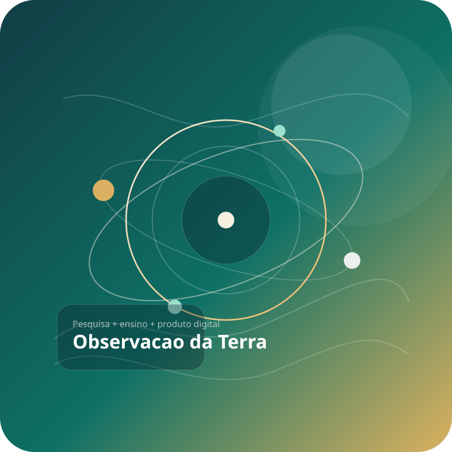
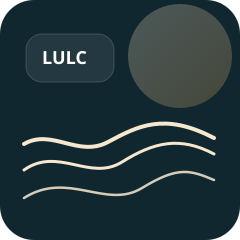

Graduação em Engenharia Florestal
Universidade Federal Rural de Pernambuco.
Currículo acadêmico | UFSM + UFRPE
Emanuel Araújo Silva atua com sensoriamento remoto, geoprocessamento, uso e cobertura da terra, modelagem espacial e soluções aplicadas para monitoramento ambiental.

Currículo registrado com atualização recente em 21/01/2026 no perfil institucional consultado.
Síntese profissional
A trajetória combina formação florestal, pesquisa em observação da Terra e desenvolvimento de interfaces que traduzem análise espacial em produtos acessíveis para ensino, extensão e tomada de decisão.
Instituições e redes
UFSM, UFRPE, PPGCF, PPGCTA, LGSR e Sociedade Brasileira de Investigação de Recursos Hídricos aparecem como eixos centrais da atuação acadêmica.
Trajetória
O percurso formativo conecta UFRPE e UFSM, com base em ciências florestais e desdobramento direto em sensoriamento remoto, geotecnologias e pesquisa aplicada.
Universidade Federal Rural de Pernambuco.
Universidade Federal Rural de Pernambuco.
Universidade Federal de Santa Maria.
Universidade Federal Rural de Pernambuco.
Docência e pesquisa com interface territorial, ambiental e computacional.
Atuação em pós-graduação, orientação e desenvolvimento de projetos.
Atuação
O perfil combina ciência aplicada, análise espacial e construção de ferramentas para visualização, classificação e monitoramento territorial.

Estudos com mudança do uso da terra, vegetação, água, classificação de imagens e dinâmica espacial em contextos ambientais e florestais.
Desenvolvimento de dashboards, rotinas de Earth Engine, notebooks didáticos e produtos digitais para comunicar resultados com clareza.
Projetos em destaque
Interfaces e produtos aplicados que conectam análise geoespacial, visualização de dados e disponibilização aberta.
Dashboard de classificação de uso e cobertura da terra, com repositório público e aplicação online para demonstração.
Plataforma online com dashboard dedicado à detecção de oliveiras e visualização de resultados em ambiente web.
Trilha de Google Earth Engine organizada por unidade, com scripts `.js` estruturados para ensino, reprodução e versionamento no GitHub.
Contribuições
Recorte de resultados e posições públicas que ajudam a compor uma visão rápida da atuação acadêmica e técnica.
Atuação como vice-diretor de Relações Institucionais da Sociedade Brasileira de Investigação de Recursos Hídricos em 2025.
Fonte públicaTrabalho sobre modelagem dinâmica das mudanças de uso e cobertura da terra na região semiárida de Pernambuco.
Acessar publicaçãoAvaliação metodológica de índices de vegetação para classificação do uso e cobertura da terra em área do oeste do Rio Grande do Sul.
Acessar publicaçãoEstudo sobre a redução futura da distribuição potencial de espécies da Caatinga sob cenários de mudança climática.
Acessar publicaçãoContato e perfis
Página pensada para servir como ponto de entrada rápido para seu currículo acadêmico, portfólio técnico e presença pública.